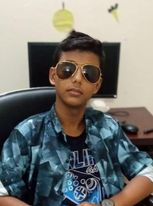

About Me
Hi, I'm Faidul Islam, a student at GPH Internationals. I have a passion for learning and exploring new things, especially in the world of technology. I'm currently learning HTML and enjoy creating content for my YouTube channel, where I record Minecraft gameplay. I love problem-solving and always strive to improve my skills and knowledge.
Skills
Technical Skills
- HTML
- CSS
- Minecraft Server Management
Personal Skills
- Problem-Solving
- Content Creation
- Teamwork
Projects
Minecraft Server Optimization
I manage a Minecraft server and constantly work on optimizing its performance to ensure smooth gameplay for all users.
YouTube Channel
I create content for my YouTube channel, focusing on Minecraft gameplay, updates, and cool features. My channel highlights interesting aspects of the game and shares tips with viewers.
Conclusion
Through my experiences with HTML, content creation, and Minecraft server management, I’ve developed a deep understanding of technology and problem-solving. I continue to explore new opportunities and strive to enhance my skills, always eager to learn and grow. Thank you for visiting my page, and I hope to connect with you through my work and projects.